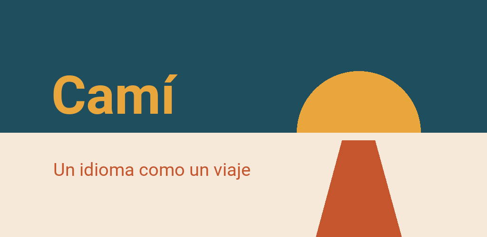

Política de privacidad
Camí · Actualización: 7 de octubre de 2026
Esto es una traducción. En caso de duda, prevalece la versión alemana.
En resumen
Camí no recoge nada sobre ti. No hay cuenta, ni publicidad, ni estadísticas de uso sobre ti: solo contamos totales diarios de la clasificación y de «Comentarios», sin nombres. Tu progreso está en tu dispositivo. Para los ejercicios de pronunciación, la app puede usar el micrófono: la grabación se analiza en el dispositivo y no sale de él. Camí solo se conecta a internet para tres cosas, y las tres las inicias tú: cuando descargas el paquete de voz para los ejercicios de pronunciación, cuando participas en la clasificación y cuando nos envías algo con «Comentarios». Para saber si hay una actualización, Camí pregunta a la app Play Store de tu móvil. Aparte de eso, la app no descarga nada.
Responsable
Finn Cardona SantaféPfaffenstraße 22
23552 Lübeck
Alemania
Correo electrónico: appentwicklung@mein.gmx
En tu dispositivo
Qué se guarda
Tu progreso, tus objetivos y los ajustes se guardan en la memoria de la app en tu dispositivo. Por ejemplo: las lecciones terminadas, el día en que completaste una etapa, las recompensas conseguidas, las cajas de tus tarjetas de vocabulario, los objetivos diario y semanal, los puntos acumulados, tu racha, el resultado de la prueba de nivel, los idiomas elegidos en «Hablo» y «Aprendo», y los ajustes de visualización. Si participas en la clasificación, se añaden tu número aleatorio con su clave (como una contraseña) y la última lista descargada (ver «Clasificación»).
No se recoge ningún nombre, ninguna dirección de correo, ningún identificador del dispositivo ni ninguna ubicación. Guardar estos datos en tu dispositivo es estrictamente necesario para la app; no requiere consentimiento (§ 25, apdo. 2, n.º 2 de la ley alemana TDDDG).
Al leer en voz alta
Cuando haces que se lea en voz alta una palabra o una frase, Camí pasa el texto a la síntesis de voz de tu dispositivo y solo elige allí voces marcadas como sin conexión. Qué síntesis de voz usa tu dispositivo y qué hace con los textos lo decide su fabricante (por ejemplo, Google o Samsung); se aplican sus condiciones.
Al hablar
En los ejercicios de pronunciación, el micrófono escucha mientras hablas. El reconocimiento ocurre solo en el dispositivo: la grabación se analiza en el acto, no se guarda en ningún sitio y no se envía. Para que puedas escucharla, tu última grabación se queda en la memoria de trabajo hasta que vuelves a hablar o sales del ejercicio. Para escuchar se usa el paquete de voz (Vosk), que descargas antes (ver «Paquete de voz para los ejercicios de pronunciación»); después queda en tu dispositivo y funciona sin red.
Antes de pedir el micrófono, Camí te pregunta, y puedes negarte. También puedes desactivar más tarde la escucha para cada idioma, o desactivar los ejercicios de pronunciación temporal o permanentemente (Ajustes → Pronunciación). El curso sigue completo en cualquier caso: sin escucha, repites las frases sin que se compruebe nada. Donde Camí podría escuchar, recibes entonces 2 puntos (XP) menos por ejercicio de pronunciación; eso solo afecta a los puntos en la app y en la clasificación, no al curso.
Copia de seguridad
Android puede incluir los datos de las apps instaladas en la copia de seguridad del dispositivo en tu cuenta de Google. Que eso ocurra depende de un ajuste de tu móvil, no de la app; a la copia de seguridad se le aplica la política de privacidad de Google.
Con independencia de ello, puedes exportar tu progreso a un archivo (Ajustes → Progreso → Exportar el progreso) y guardarlo donde quieras. Lo que pase con ese archivo lo decides solo tú. Si participas en la clasificación, tu número aleatorio y su clave también van en él: quien pasa el archivo a otra persona le pasa su puesto en la clasificación.
Borrar
En la app: Ajustes → Progreso → Reiniciar, si quieres solo para un idioma. Quien desinstala la app borra con ella todos sus datos del dispositivo; una copia de seguridad del dispositivo o un archivo exportado no se ven afectados. Tu entrada en la clasificación la borra el interruptor con el que la desactivas; si desinstalas antes, tu entrada caduca a los 60 días.
Conexiones a internet
Camí solo se conecta cuando tú lo inicias. Los cursos, las imágenes y los mapas están incluidos en la app; tus grabaciones y tu progreso nunca salen del dispositivo. Estas son hoy todas las conexiones:
Paquete de voz para los ejercicios de pronunciación
Cuándo: cuando activas la escucha en un ejercicio de pronunciación o en los ajustes y el paquete de ese idioma aún no está en tu dispositivo, una vez por idioma; la app indica antes el tamaño (ahora mismo, unos 40 a 50 MB).
Qué se envía: los datos de conexión habituales de una descarga: la dirección del archivo, tu dirección IP y un identificador del software utilizado. Nada sobre ti, tu progreso ni tus grabaciones.
Adónde: a alphacephei.com, el servidor de Alpha Cephei Inc., que publica el software de reconocimiento Vosk; el servidor está actualmente en Alemania. Tu dirección IP llega allí, no a nosotros: nunca la recibimos.
Base legal: la descarga se hace a petición tuya, para que el ejercicio haga lo que has activado (art. 6.1.b) del RGPD).
Desactivar: si no descargas el paquete, esta conexión no existe. Un paquete descargado lo borras de tu dispositivo en Ajustes → Pronunciación.
Clasificación (voluntaria)
Sin ella no te falta nada. Está desactivada hasta que la activas y das tu consentimiento; puedes participar a partir de los 16 años. Entonces nuestro servidor recibe:
- tu apodo,
- un número aleatorio que elige tu propio dispositivo, con una clave por la que el servidor te reconoce (solo guarda su huella),
- tus puntos por ejercicio con el día,
- y, como en cualquier conexión, tu dirección IP.
Para qué: para que aparezcas en una clasificación con otras personas. Todos los que participan ven los apodos y los puntos, así que no uses tu nombre real. Si un apodo es ofensivo, lo retiramos; tus puntos se mantienen. Nadie más recibe los datos. Solo se analiza el total de todos: cuántas personas participan y cuántos puntos se suman por día y por tipo de ejercicio, sin apodos ni números aleatorios.
Adónde: a nuestro propio servidor. Alquilamos la máquina a IONOS SE (centro de datos en España, es decir, en la UE); IONOS es nuestro encargado del tratamiento y sigue nuestras instrucciones.
La base legal es tu consentimiento (art. 6.1.a) del RGPD). Lo retiras desactivando la clasificación; lo ocurrido hasta entonces sigue siendo lícito (art. 7.3 del RGPD).
Cuánto tiempo: si desactivas la clasificación, se borra tu entrada; si en ese momento no tienes conexión, en cuanto vuelvas a estar en línea. Si durante 60 días no llega nada de ti, se borra sola. Una entrada borrada permanece como máximo 14 días en las copias de seguridad del servidor.
Comentarios
Con «Comentarios», arriba en la pantalla, nos envías un error o un deseo. No se envía nada hasta que tocas «Enviar», y solo lo que indica la ventana: tu texto y el motivo; en un ejercicio, su lugar en el curso y la solución; tu idioma de aprendizaje y tu idioma de explicación, la versión de la app y el sistema; y una captura de pantalla, salvo que la desmarques. Además, como en cualquier conexión, tu dirección IP; queda en el registro del servidor web, no en el aviso mismo.
El aviso no lleva nombre ni identificador. Por eso no podemos responderte, ni tampoco encontrarlo más tarde: así que no escribas en él nada personal.
Adónde: al mismo servidor que la clasificación (IONOS SE, ver allí).
La base legal es nuestro interés legítimo en corregir los errores que tú nos envías (art. 6.1.f) del RGPD). Cuánto tiempo: en nuestro servidor hasta que lo hayamos leído, como máximo 90 días, y otros 14 días en las copias de seguridad. Después, sin texto ni captura, solo guardamos el día en que llegó, su tipo, los dos idiomas, la versión de la aplicación y qué se hizo con él, para contar cuántos avisos llegan y con qué rapidez los tratamos.
El registro del servidor web
En la clasificación y en «Comentarios», el servidor web que hay delante de nuestro servicio anota cada petición con tu dirección IP en su registro. Esto sirve únicamente para un funcionamiento seguro, por ejemplo para detectar ataques, y es nuestro interés legítimo (art. 6.1.f) del RGPD). El registro se borra a los 14 días. El servicio en sí no guarda ninguna dirección IP.
Aviso de actualización a través de Play Store
Para saber si hay una versión nueva de Camí, la app pregunta a la app Play Store de tu móvil (las «actualizaciones en la aplicación» de Google). Camí no establece para ello ninguna conexión propia y no le da a Play Store nada sobre ti. Play Store envía a Google sus propios datos, por ejemplo datos del dispositivo y la versión de la app; a ello se aplican las condiciones de servicio de Google Play y la política de privacidad de Google.
Aparte de esto, no hay ninguna cesión a terceros, ninguna red publicitaria y ningún servicio de análisis.
Tus derechos
Lo que está en tu dispositivo es tuyo y puedes consultarlo y borrarlo allí en cualquier momento (ver «Qué se guarda» y «Borrar»). Sobre los datos de nuestro servidor tienes derecho de
- acceso (art. 15 del RGPD) y supresión (art. 17): para la clasificación, la propia app te da ambos: Ajustes → «Qué se guarda sobre ti» y el interruptor de la clasificación,
- rectificación (art. 16), limitación (art. 18) y portabilidad (art. 20),
- oposición a un tratamiento basado en nuestro interés legítimo (art. 21),
- retirada de tu consentimiento con efecto para el futuro (art. 7.3): en la clasificación, desactivándola.
Para ello, escríbenos a la dirección indicada arriba. Sin embargo, no podemos asignarte un aviso enviado con «Comentarios», porque no lleva ningún identificador (art. 11 del RGPD).
Además, tienes derecho a presentar una reclamación ante una autoridad de control de protección de datos (art. 77 del RGPD), por ejemplo en tu país o en tu lugar de residencia. La autoridad competente para nosotros es el Unabhängiges Landeszentrum für Datenschutz Schleswig-Holstein (la autoridad de protección de datos del estado federado de Schleswig-Holstein), Holstenstraße 98, 24103 Kiel, Alemania, www.datenschutzzentrum.de.
Cambios
Si cambia algo en el tratamiento de los datos, esta página se actualizará y se cambiará la fecha de arriba.